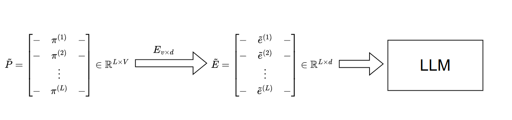
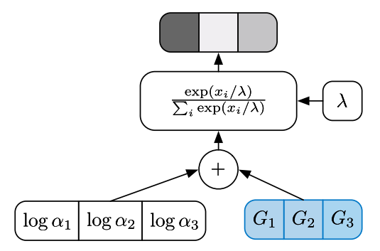
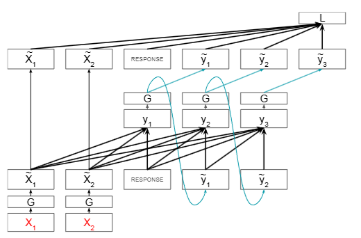
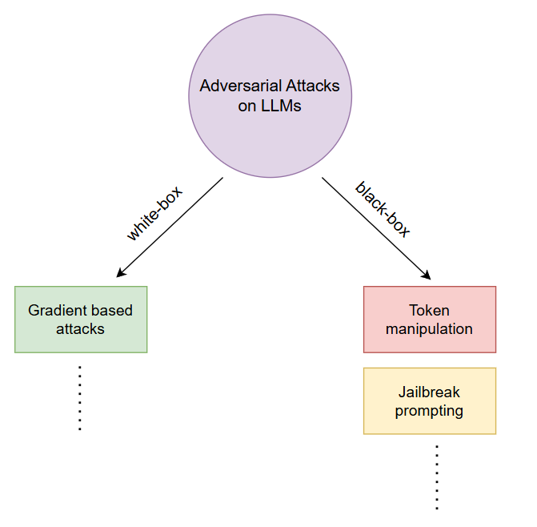

Automated Gradient-Based Attack on Large Language Models
A white-box framework that generates adversarial prompts automatically. Discrete token search is relaxed into a differentiable problem using soft prompts, Gumbel-Softmax sampling and learnable token distributions. The prompt is then optimized by backpropagating through the target LLM, guided by a pretrained safety classifier. The gradient-guided optimization follows the GBRT approach and reached an average toxicity score of 0.31 (Perspective API), which shows how susceptible LLMs are to gradient-based prompt optimization.



